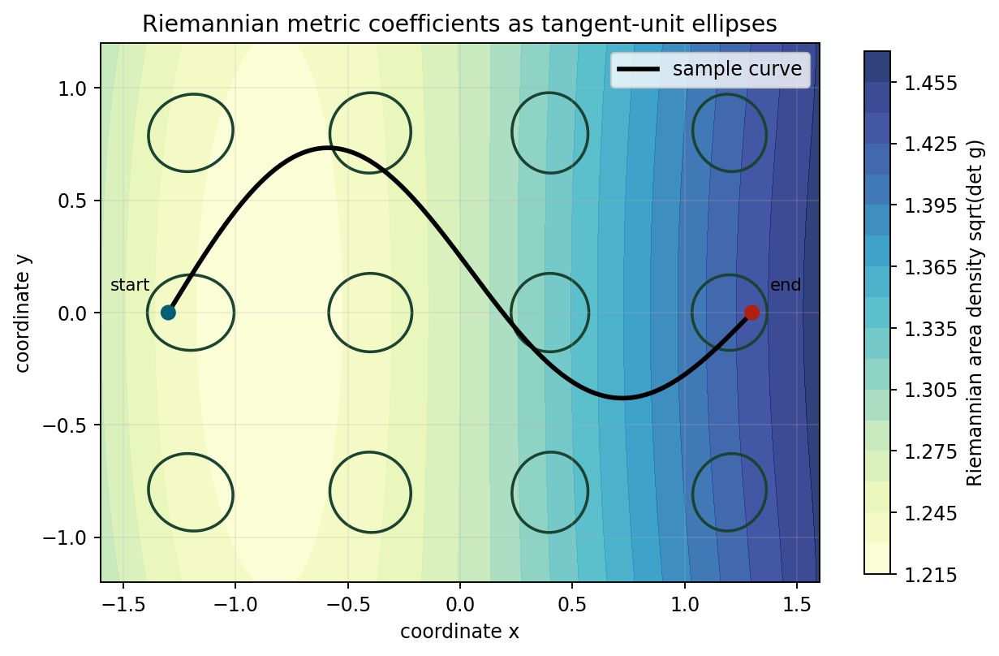
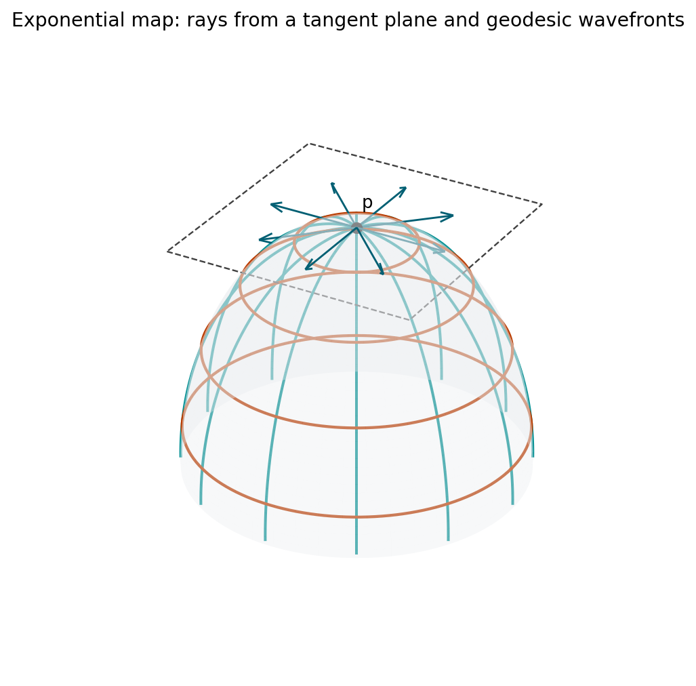
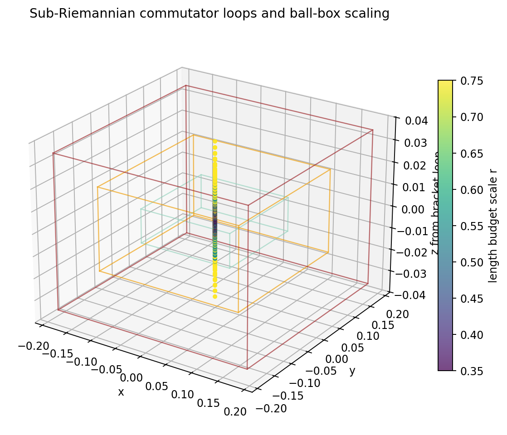
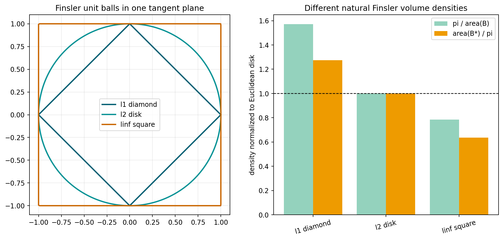
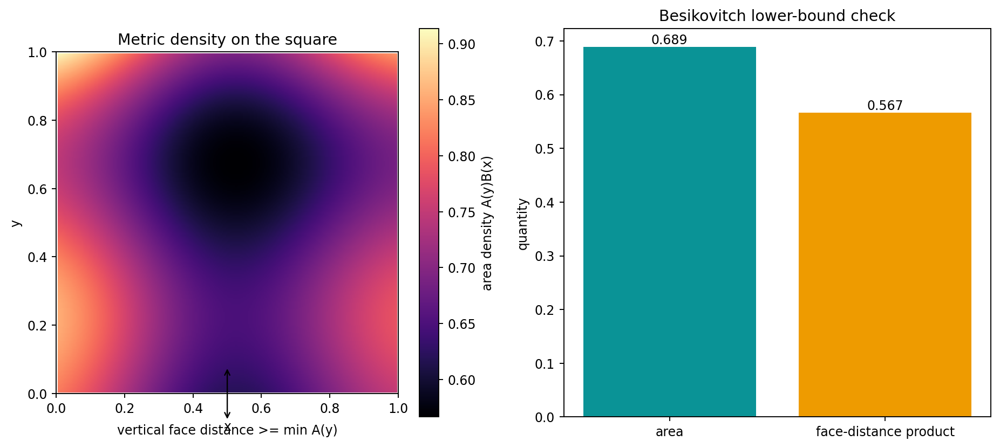
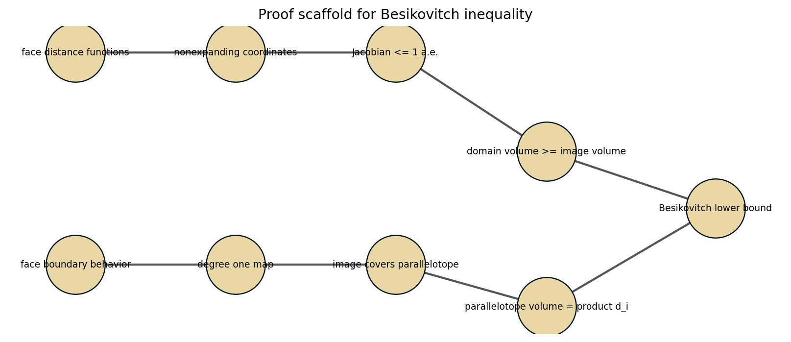

Guiding question: how much metric geometry is already determined by the infinitesimal cost of tangent vectors?
Every tangent space carries an inner product \(g_p\); length is accumulated continuously.
Initial velocity data launches geodesics and builds normal coordinates near a point.
The disk looks Euclidean but measures distance with boundary blow-up.
Sub-Riemannian curves are allowed to move only in selected directions.
Riemannian determinants and Finsler unit balls define competing density rules.
Opposite-face distances force a lower bound on volume.
A smooth metric tensor assigns each \(p \in M\) an inner product \(g_p\) on \(T_pM\).
The metric space appears after a variational step.

Artifact: ../figures/metric-tensor-length-field.png
Each ellipse is a tangent-space unit ball for \(g_p\). A direction crossing a narrow part of the ellipse is expensive; a direction crossing a wide part is cheap.
The same sampled curve is measured using the ordinary coordinate norm.
The metric tensor weights the velocity along the route.

Artifact: ../figures/exponential-map-normal-coordinates.png
Given \(v \in T_pM\), follow the geodesic with initial velocity \(v\) for time \(1\). The endpoint is \(\exp_p(v)\).
In normal coordinates centered at \(p\), radial geodesics meet small metric spheres orthogonally.
This makes the radius parameter a first-order distance coordinate.
The sphere model samples radial and angular directions and computes their dot product.
The disk is visually bounded, but the hyperbolic boundary is infinitely far away.
Euclidean straightness is not the criterion for hyperbolic geodesics.
HTML artifact: ../html/hyperbolic-poincare-lab.html
A curve is measured only when its velocity lies in a prescribed horizontal distribution \(H \subset TM\).

Artifact: ../figures/sub-riemannian-ball-box.png
\(V=(1,0,0)\), \(W=(0,1,x)\), so \([V,W]=(0,0,1)\) at the origin.

Artifact: ../figures/volume-comparison.png
Volume density is governed by \(\sqrt{\det g}\).
A normed tangent space has a unit ball; volume conventions read either that ball or its polar.
| Norm | Unit Ball Area | Polar Area | Busemann | Holmes-Thompson |
|---|---|---|---|---|
| \(\ell^1\) diamond | 2.000 | 4.000 | 1.571 | 1.273 |
| \(\ell^2\) disk | 3.142 | 3.142 | 1.000 | 1.000 |
| \(\ell^\infty\) square | 4.000 | 2.000 | 0.785 | 0.637 |
Busemann density compares the Euclidean disk area to the Finsler unit ball area.
Holmes-Thompson density normalizes by the polar unit ball area.

Artifact: ../figures/besikovitch-cube-map.png
A square-like surface with opposite faces separated by \(d_1\) and \(d_2\) must carry area at least \(d_1d_2\).

Artifact: ../figures/besikovitch-proof-dependency.png
Pick one artifact: metric field, exponential map, disk lab, ball-box, volume table, or Besikovitch map.
Name the geometric object, the theorem idea it supports, and one numeric badge that verifies the picture.
Identify one visual misconception the artifact prevents.
Replace a Riemannian inner product by a non-Euclidean norm on each tangent space. Which parts of the chapter still work unchanged, and which require a new volume convention?